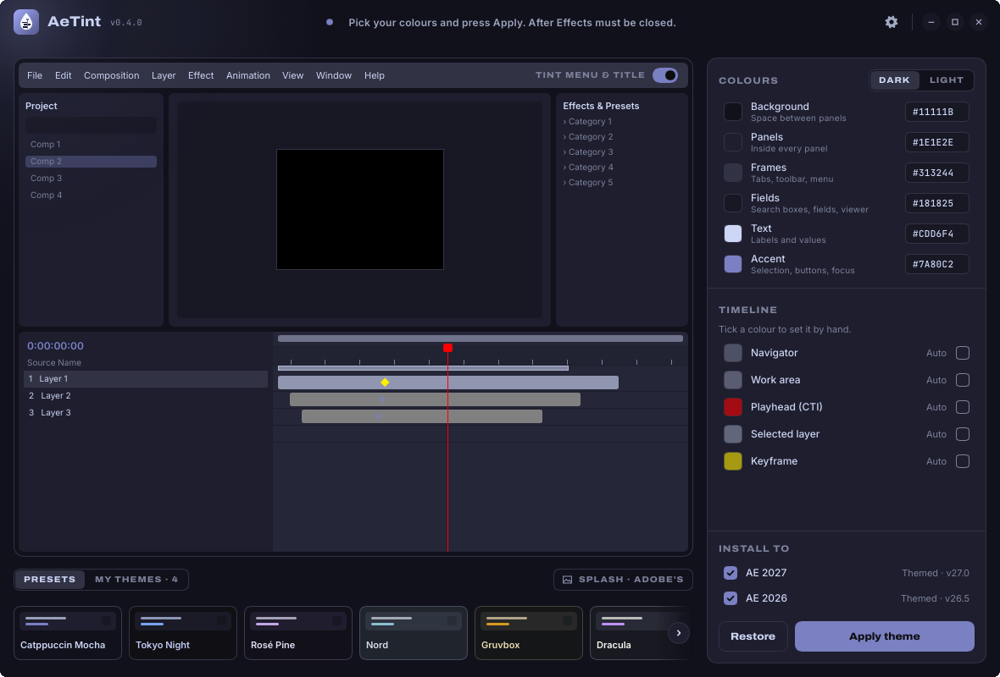
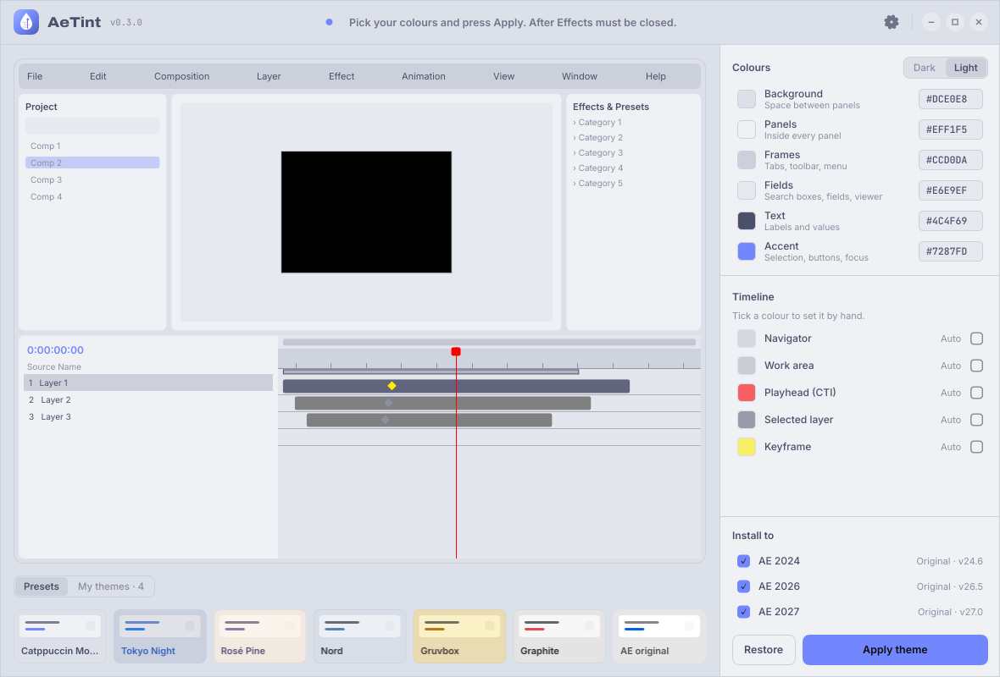

Panels, buttons and fields
Each grey is placed between your colours by lightness. Accent blues turn into your accent.
Panels, timeline, Home screen, menus and the title bar, recoloured from a single palette. Apply in one click. Undo in one click.

Works with
Features
Six colours drive hundreds of Adobe greys, so every in-between shade lands where it should.
Each grey is placed between your colours by lightness. Accent blues turn into your accent.
Navigator, ruler, work area, playhead and layer bars, with optional colours of your own.
File, Edit, the multi-column Effect menu, submenus and the title bar, painted by a small plugin.

Hue, saturation and lightness sliders, with boxes to type values or a hex code.
Adobe's files are backed up before anything changes. Restore puts them back.
Save palettes under My themes and export them as .aetint files; a double-click opens one in AeTint. You can even put your own image on AE's splash screen experimental.
Palettes
Every preset comes in a dark and a light version, for AE's Darkest, Dark and Light modes. Try them on the same preview the app shows.
How it works
Start from a preset or set background, panels, frames, fields, text and accent yourself.
Switch to Light and adjust that palette too, so AE looks right in every brightness.
Keep the result under My themes, then close After Effects and press Apply theme. Restore brings back Adobe's look.


Compatibility
Adobe's files are found by name, not by fixed positions, so new builds keep working as long as Adobe keeps the format.
| After Effects | Panels & timeline | Home screen | Menus & title bar |
|---|---|---|---|
| 2027 | Tested | Tested | Supported |
| 2026 | Tested | Tested | Tested |
| 2025 | Files checked | Very likely | Supported |
| 2024 | Tested | Tested | Tested |
| 2020 – 2023 | Files checked | Not applicable | Supported |
Files checked means AeTint reads and themes that version's files correctly, but it hasn't been tried in a running copy yet. Using one? Let us know how it goes.
FAQ
Something else? Open an issue.
It rewrites a few of Adobe's files in place, keeping their exact size, and saves the originals first. Restore in AeTint, or uninstalling with Restore After Effects ticked, puts everything back.
After Effects lives in C:\Program Files, which only administrators can write to. The first Apply theme asks once and then lets your user update those specific files, so it doesn't ask again.
Updates replace Adobe's files with new ones. Open AeTint and press Apply theme again; it backs up the new files first.
A tiny startup plugin that loads the menu painter when After Effects opens, so the menus are themed from the first frame with nothing running in the background. It doesn't appear among your effects.
AeTint is open source and every release is built by GitHub Actions from the public code. The optional menu watchdog loads a DLL into After Effects, which some antivirus heuristics dislike; the default plugin path avoids that.
Yes. AeTint is free and open source under the GPL-3.0 licence, with no account and no telemetry. It only checks GitHub for new releases.
Free, open source and ready in a minute.